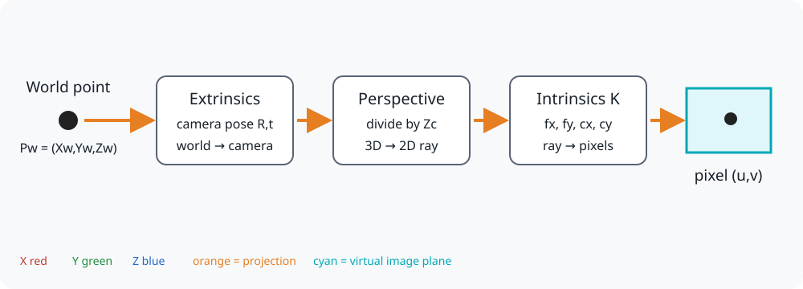
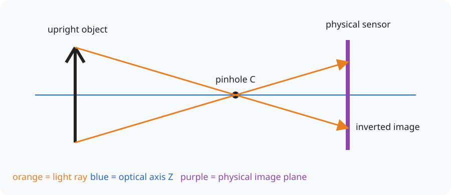
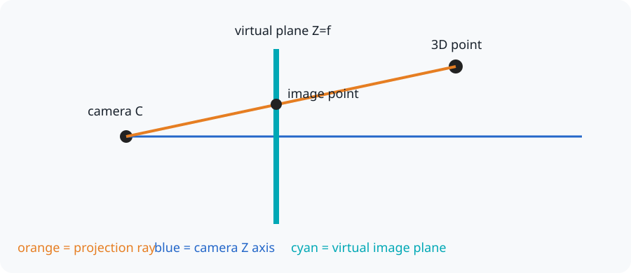
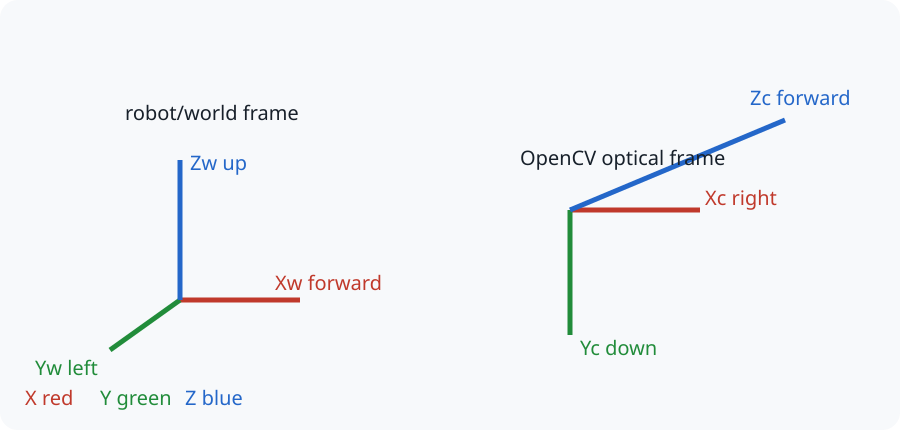
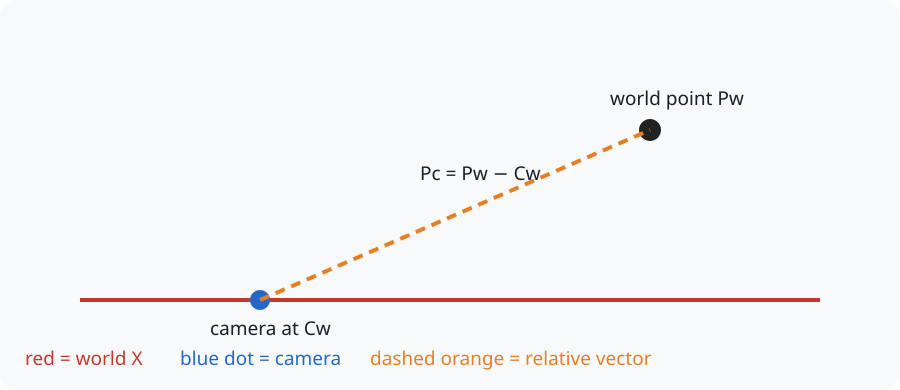
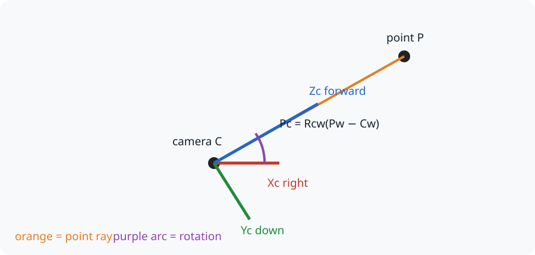
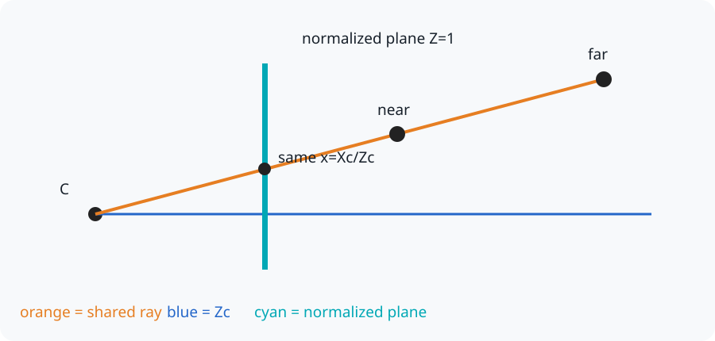
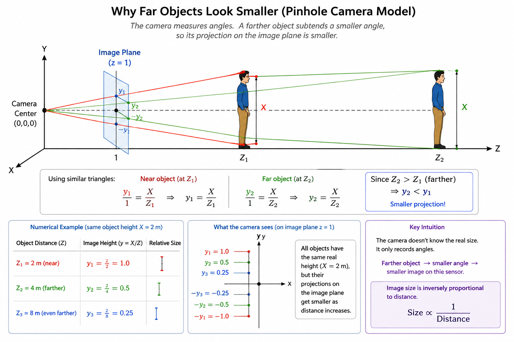
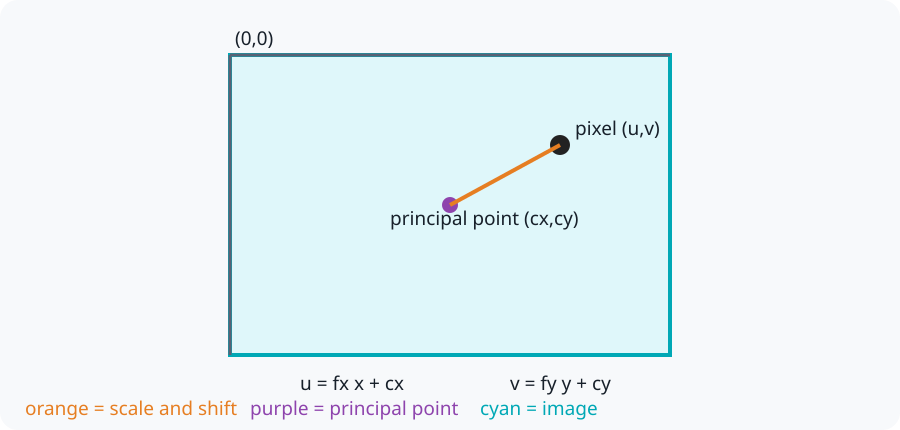
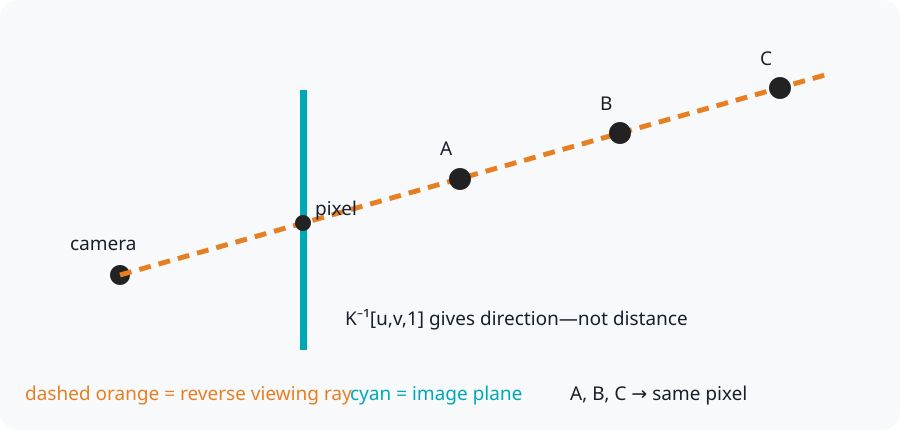

The Pinhole Camera Model
A camera turns points in a three-dimensional world into pixels on a flat two-dimensional image. This page builds that process one step at a time—from a light ray passing through a tiny hole to the matrices used by OpenCV and robotics software.
No previous computer-vision or matrix knowledge is required.

The three main operations are:
- Extrinsics describe where the camera is and which direction it faces.
- Perspective projection turns a 3D camera point into a 2D direction.
- Intrinsics convert that direction into pixel coordinates.
In compact form:
1. The physical pinhole camera
Imagine a closed box with a tiny hole in one side. Light travels in straight lines. Only a narrow ray from each point can pass through the hole, so the rays cross and form an upside-down image on the sensor behind it.

The pinhole is called the camera center or optical center, written as \(C\). The straight line pointing out of the camera is the optical axis.
Real cameras use lenses because a pinhole admits very little light. The pinhole model is still useful because it approximates the geometry of an ideal calibrated camera.
2. Why computer vision uses a virtual image plane
Working with an upside-down image behind the camera is inconvenient. We draw an imaginary plane in front of the camera instead. It intersects the same ray and produces an upright diagram.

The plane is placed at \(Z_c=f\), where \(f\) is the focal length. This is a mathematical tool; the physical sensor remains behind the lens.
Keep this mental model
A pixel is where a ray crosses the virtual image plane. Projection records the ray's direction, so it loses the point's distance from the camera.
3. Coordinate frames are different viewpoints
A coordinate frame is an origin plus three axes. The same point has different numbers when described from different frames—just as directions from your desk differ from directions from the classroom door.
This tutorial uses realistic conventions:
- Robot/world frame: \(X_w\) forward, \(Y_w\) left, \(Z_w\) up.
- OpenCV optical frame: \(X_c\) right, \(Y_c\) down, \(Z_c\) forward.
- Image frame: \(u\) right and \(v\) down, starting at the top-left pixel.

The subscripts tell us which frame owns the coordinates: \(P_w\) is a point in the world frame and \(P_c\) is the same point in the camera frame.
4. Extrinsics: move from world to camera coordinates
Extrinsic parameters describe the camera's position and orientation in the world. They do not describe the lens.
Example A: translation first
If the teaching frames temporarily point in the same directions, subtract the camera position \(C_w\) from the world point:

For example, if \(P_w=(5,2,4)\) and \(C_w=(1,1,1)\), then:
Example B: include camera orientation
A real robot camera may face a different direction from the world axes. After subtracting its position, rotate the relative vector into the optical frame:

\(R_{cw}\) means “rotate coordinates from world to camera.” Be careful: many systems store the opposite rotation \(R_{wc}\). For a rotation matrix, \(R^{-1}=R^T\), so transposing reverses its direction.
The same transformation is often written as:
Position and translation are not identical
\(C_w\) is the camera position expressed in world coordinates. The extrinsic translation \(t_{cw}\) is the world origin expressed in camera coordinates. In general, \(t_{cw}\ne C_w\).
5. Perspective projection: depth makes things smaller
Suppose the camera-frame point is:
Similar triangles give the coordinates on the normalized image plane:
Similar triangles
So similar triangles are the geometric reason behind normalized image coordinates

For \(P_c=(1,1,4)\):
If every coordinate doubles to \((2,2,8)\), the normalized coordinates remain \((0.25,0.25)\). Both points lie on the same viewing ray and therefore reach the same pixel.
Points must be in front of the camera
In the OpenCV optical frame, a visible point must normally have \(Z_c>0\). Projection becomes undefined at \(Z_c=0\).
Why far objects look smaller

The key idea - The camera measures angles, not physical size. - A nearby object occupies a large angle, so it appears large. - A distant object occupies a small angle, so it appears small.
6. Intrinsics: move from normalized coordinates to pixels
Normalized coordinates do not yet tell us a pixel location. The camera's intrinsic parameters perform two operations:
- \(f_x,f_y\) scale the coordinates using focal length measured in pixels;
- \(c_x,c_y\) shift the origin to the principal point, normally near the image center.

For a 640 x 480 camera, let:
Our normalized point \((0.25,0.25)\) becomes:
So the world point appears at pixel \((445,365)\).
The intrinsic matrix stores the same operation:
The skew \(s\) is normally zero for modern cameras.
7. Put the geometry into matrices
The ordinary equations explain the geometry. Matrices let software perform the same operations consistently.
Why add a fourth coordinate?
Rotation is easy to express with a \(3\times3\) matrix, but translation is an
addition. Homogeneous coordinates add a final 1, allowing one matrix to
represent both:
The full ideal projection can be written compactly as:
The unknown scale \(\lambda\) is related to depth. After multiplication, divide the first two homogeneous image values by the third to obtain \((u,v)\).
This ideal lesson intentionally leaves out lens distortion. Distortion acts between normalized projection and pixel mapping and will be covered in a more advanced post.
8. Reverse projection: pixel to a 3D ray
Start from a pixel in homogeneous form:
Undo the intrinsics to recover a camera-frame direction:
This is a ray, not a complete 3D point:

Once a depth \(Z\) is known, transform the camera point back to the world:
Depth can come from stereo cameras, a depth camera, LiDAR, a rangefinder, multiple views, a known plane, or a known object size. Without such information, one image pixel cannot identify one unique 3D point.
9. Run the complete example
The manual NumPy example follows the complete forward pipeline and then reverse-projects the pixel into a unit camera ray.
Download pinhole_projection.py
Run it with:
OpenCV can perform the projection using cv2.projectPoints:
The two programs should report pixel (445, 365).
10. Check your understanding
If an object's depth doubles, what happens to its pixel size?
Its pixel size becomes approximately half as large because projected size is proportional to \(1/Z_c\).
Can one pixel identify a unique 3D point without depth?
No. It identifies a viewing ray. Every point along that ray projects to the same pixel.
What happens when the principal point cx increases?
Every projected horizontal pixel coordinate \(u\) shifts to the right by the same amount. Changing \(c_y\) similarly shifts pixels downward.
Complete pipeline summary
The distance-estimation demo is a practical example of recovering depth by supplying the known physical width of an object.